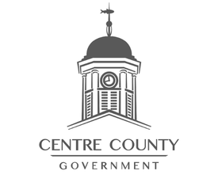
Centre County Aging Services
The Centre County Office of Aging offers services for seniors...
Read More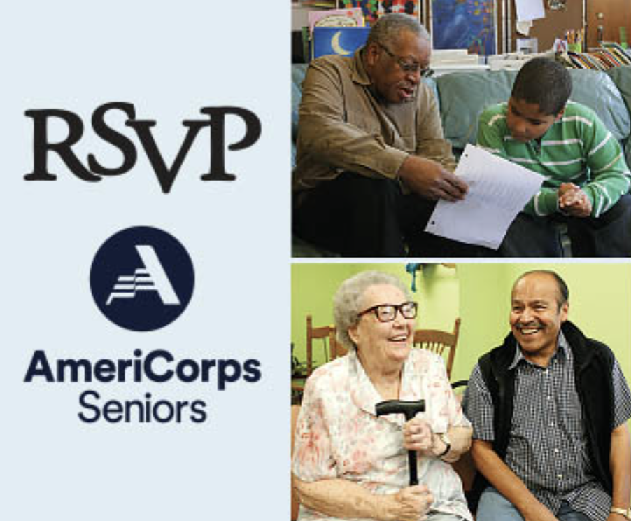
RSVP Aging Services
RSVP of Centre County connects seniors to helpful resources that can benefit them.
Read More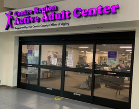
Centre County Senior Centers
There are six senior centers in Centre County, offering varying resources to assist seniors in their quality of life.
Read More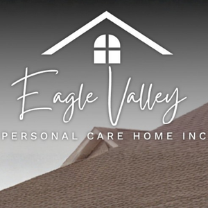
Eagle Valley Retirement Home
Eagle Valley Personal Care Home provides a place for the elderly to live.
Read More
The Village at Penn State
The Village at Penn State serves as a residence to assist seniors.
Read More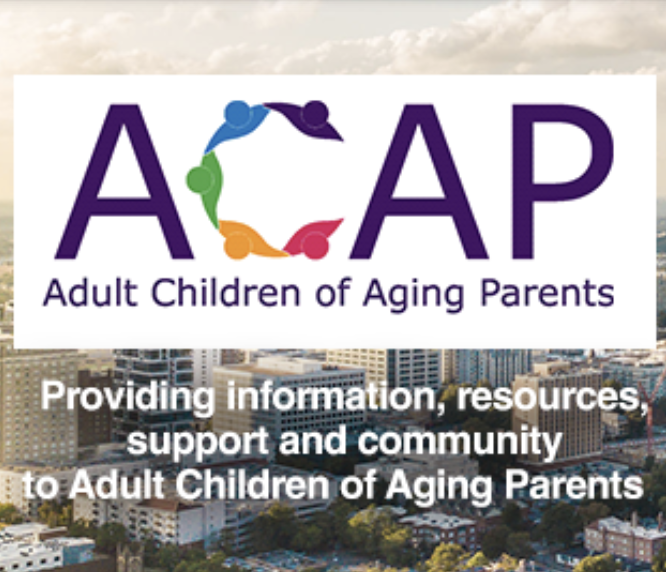
ACAP
The Adult Children of Aging Parents program helps adult caregivers support their aging parents
Read More
Childspace
Childspace provides personalized care for children of 18 months to 5 years old.
Read More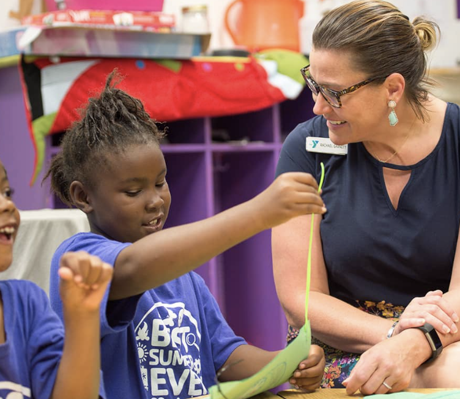
YMCA
The YMCA’s School Age Child Care (SACC) program serves as a nurturing place for children.
Read More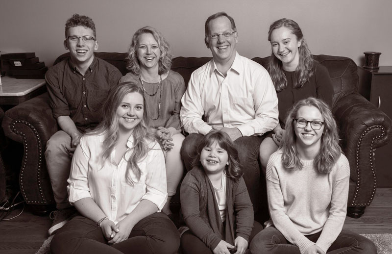
Youth Services Bureau
The Youth Service Bureau helps ensure that children and their families have ample resources to
Read More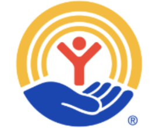
Centre County United Way
United Way works to give everyone access to quality education. They fund programs with proven outcomes that provide child care and preschool opportunities or literacy education
Read More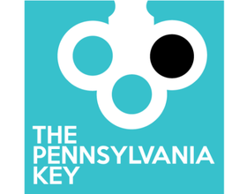
The Pennsylvania Key
The Pennsylvania Key works with partners and Centre County organizations to provide educational, professional, and administrative services to educators, supporting improvement in early learning experiences for young children.
Read More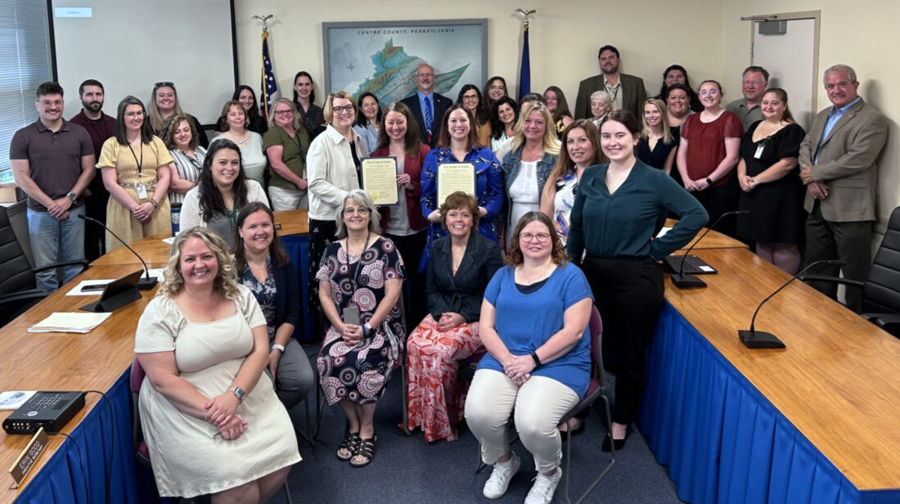
Children & Youth Services
Centre County Children & Youth Services is dedicated to ensuring a safe environment for kids.
Read More
State College Food Bank
The State College Food Bank supplies food for everyone to provide a stable source of food security.
Read More
Faith Centre
Faith Centre is a Christian faith-based umbrella of food security resources and programs to benefit individuals.
Read More
Central PA Community Action
CPCA partners with individuals and families in Centre and Clearfield Counties to address essential housing and health needs through community-based services.
Read More
CommonFood
CommonFood is an organization started by the Grayswoods Church. They provide resources to the elderly, single-parent families, and those who are underpaid.
Read MoreThe Lion's Pantry
The Lion’s Pantry is a student-run organization that provides support to students, faculty, and staff experiencing food insecurity.
Read More
Goodwill
Goodwill's network of stores and career centers provide employment opportunities and training programs while promoting sustainability. They provide secondhand items for an affordable price, and ensure that there are ample resources for people in need.
Read More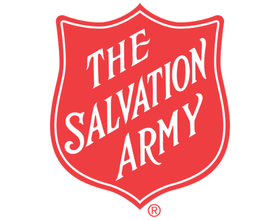
Salvation Army
The Salvation Army's assistance programs provide food, gifts, and necessities to those in need during the holiday season. They host toy drives, meal distribution events, and the Angel Tree program, aiming to ensure everyone gets equal opportunities during the holidays.
Read More
The Mommy Shoppe
The Mommy Shoppe is a nonprofit thrift store in Houserville, PA. The give donated clothes to those who need it, and have a program for people to register so they can get free clothing for their children.
Read More
Centre Peace
They actively work toward restoring lives of incarcerated individuals while bringing peace and healing to all affected by crime. As part of this process, they hold clothing drives for those in need and/or incarcerated individuals to access quality clothing.
Read MoreVincent De Paul Store
St. Vincent de Paul Thrift Store provides a cheap and accessible way for those under the poverty line to get free clothing and garments. They have holiday events, volunteering activities, and more!
Read More
Out of the Cold
Out of the Cold is an easy-to-access homeless shelter that serves homeless citizens of Centre County. Hundreds of people are served by the shelter every single year. The shelter provides free showers, laundry, 3 meals, guidance, and more!
Read More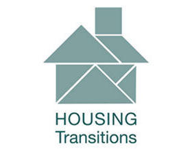
Housing Transitions
Out of the Cold is an easy-to-access homeless shelter that serves homeless citizens of Centre County. Hundreds of people are served by the shelter every single year. The shelter provides free showers, laundry, 3 meals, guidance, and more!
Read More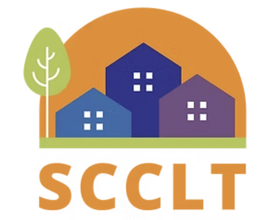
Centre County Landtrust
State College Community Land Trust (SCCLT) keeps housing affordable by renting out community land to those in need. The house’s price is limited to meet the budgets of Centre County citizens. So far they have aided 55 Forever Homes, 83 Households, and 8 Neighborhoods.
Read More
Centre County Housing Authority
The Centre County Housing Authority (CCHA) helps connect people to affordable housing options. They also advise on housing decisions, assist with lower financial class housing affordability, and provide comfortable living environments for all clients.
Read More
Centre County Housing
Centre County Housing provides resources and hotlines for those in need of affordable housing. They offer resources such as community support, shelters, guides, and more! Their services help combat homelessness around Centre County.
Read More
CATA Bus Services
Centre Area Transportation Authority (CATA) serves all five Centre Region Municipalities. Their mission is to deliver safe, reliable, accessible, and affordable transportation that is environmentally friendly and appealing to riders.
Read More
Centre County Transportation Office
The Centre County Office of Transportation provides transportation services to Centre County residents through multiple programs and agencies, maintaining the transportation methods available to the Centre County public.
Read More
Greyhound Bus Services
Greyhound aims to make travel easier for their customers and keep communities connected, all while making travel affordable and sustainable for all. They provide busing services not only in Centre County, but all over Pennsylvania.
Read More
Megabus: Penn State
Megabus's mission is to provide affordable, convenient, and reliable low-cost bus travel, connecting cities across PA. They hope to make exploration easy for travelers, and partner with local carriers of State College like Fullington Trailways to expand network reach.
Read More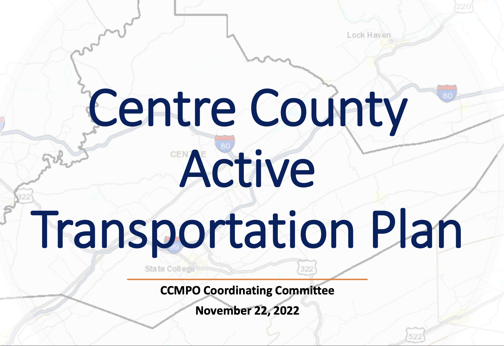
Active Transportation Plan
The purpose of the Centre County Active Transportation Plan (CCATP) is to help manage projects that will improve conditions for bikes, pedestrians, and automotives. They take requests from the community and initiate action on local transportation issues.
Read More
Applegate Recovery
AppleGate provides Suboxone, Opioid, Chronic Pain, and Alcohol Treatment. They help develop personalized recovery plans, provide physical and emotional support, offer therapy sessions for clients.
Read More
Centre County: Drug and Alcohol
Centre County Drug and Alcohol directs prevention, intervention, treatment, and recovery support services for residents of Centre County and their families who are affected by drug addiction. They provide recovery funding, local opportunities, and more.
Read MoreCrossroads Counseling, INC
Crossroads Counseling provides individual and group counseling for patients recovering from drug addictions. They have flexible hours, specializing in alcohol drug counseling and domestic violence treatments.
Read More
Pinnacle Treatment Centers
Pinnacle Treatment Centers is a Drug Rehab & Opioid Treatment Program (OTP) in State College, PA. It offers medication-assisted treatment for opioid addiction, supervised by experienced staff. It includes comprehensive evaluations and a variety of counseling services, including CBT and motivational interviewing.
Read More
St. Joseph Counseling
St. Joseph Counseling provides hollistic addiction and mental health treatment to help addicts reclaim their lives and cope with the side effects of quitting drugs. They have therapy services, acess to specialists, and support groups availible to anyone in need.
Read More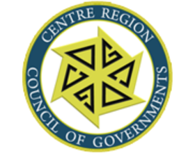
CRCOG Employment
CRCOG Employment Services provide up-to-date information on job opportunities throughout Centre County, and provide counseling on Life Insurance, Medical Insurance, and Retirement programs.
Read More
PA Careerlink
PA CareerLink® is part of the Pennsylvania Department of Labor & Industry’s initiative to allow job-seekers to find family sustaining jobs, and help employers find the skilled candidates that they need. They have a user-friendly job-matching system to help bridge the gap that currently exists between job-seekers and employers.
Read More
Interfaith Human Services
They actively work toward restoring lives incarcerated individuals while bringing peace and healing to all affected by crime. The ultimate goal of CentrePeace is to allow formerly incarcerated individuals to reenter their communities prepared to work, and live peacefully among others.
Read More
LIHEAP Offices
The Low Income Home Energy Assistance Program assists low income families with their heating and energy bills. This year-long program is available around the clock, and the organization aims to make energy affordable for all.
Read More
Skills of Central PA
They provide behavioral health and disability support services in Centre County, helping build trust and independence in the disabled community. From medical treatment guidance to group therapy, they aim to better the lives of Centre County citizens.
Read More
Discovery Space
Discovery Space is a scientific playground where children can learn about STEM. Through internships like SPARK, aiding with summer camps, or helping on the playground, volunteers ages 14 and up can contribute to the learning environment.
Read MoreSchlow Library
Schlow Library is a public library for all ages full of books and events. Those over the age of can become permanent volunteers around the library, while kids aged 13-16 can be a summer reading volunteer. For more information on how to apply, click below!
Read More
Centre Care
Centre Care is a nonprofit nursing care community with various volunteering opportunities, from arranging flowers for the elderly to helping care for them. They welcome volunteers every day of the week! Find more information in the link below.
Read More
PVCA Environmental Educators
Do you love helping young people learn about ecology, conservation, and our natural environment? Volunteer as an environmental educator with Penns Valley Conservation Association to help a child realize how important our natural environment is - help train our future to recognize the earth’s goodness!
Read More
AAUW Book Drive Volunteering
AAUW State College is accepting books, CDs, DVDs, puzzles and games for their annual used book sale! Be a workshop volunteer to help sort and price the books for redistribution to the State College community!
Read More
Jana Marie Summer Camp
The Jana Marie Foundation is looking for volunteers to help supervise their Junior and Senior summer camps! Help kids with crafting, teach about mental health, and gain community service hours!
Read More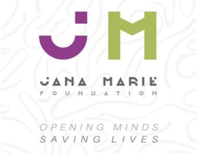
Jana Marie Foundation
Jana Marie Foundation aims to harness dialogue and creative expression to start conversations, build connections, and promote mental well-being among youth and their families.
Read More
Center for Community Resources
Center for Community Resources aims to make a positive difference in everyday lives by connecting people to a network of supports and services to learn, work, and live peacefully in the community. They connect people with the services they need and promote mental wellbeing.
Read More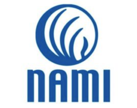
NAMI, Centre County
The National Alliance on Mental Illness provides advocacy, education, support and public awareness so that all individuals and families affected by mental illness can build better lives. They provide support services, resources, and counseling.
Read MoreCentre County Mental Health
Centre County Mental Health (CCMH) aids those who are diagnosed with emotional disorders or mental illness through case management services. CCMH administrative and blended case management, providing resources to those eligible in Centre County.
Read More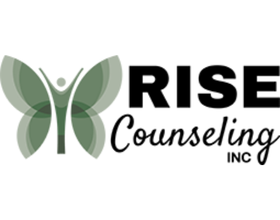
Anxiety/Depression Aid
Anxiety/Depression aid is hosted by psychologist Tessa Bills. For those who are struggling to manage their anxiety or depression on their own, this class offers management techniques to improve mental health.
Read More
Mental Peace Psychiatry
Mental Peace offers effective, professional health services for mental, physical, or behavioral disorders. Led by Abigail Frimpong, Psychiatric Nurse Practitioner, they use medical-based findings to improve clients' quality of life.
Read More
Centre Volunteers in Medicine
Centre Volunteers in Medicine (CVIM) is Centre County’s only free clinic, offering high-quality care to uninsured individuals. They provide medical, dental, and behavioral aid free of charge.
Read More
Mount Nittany Health
Mount Nittany Health provides nationally-recognized healthcare, working to make healthier people and a stronger community. They are committed to utilizing resources to meet the healthcare needs of the community, providing 24/7 healthcare and insurance.
Read More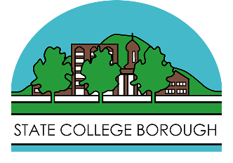
SC Public Health Division
The mission of the Public Health Division is to prevent and control disease, promote healthy lifestyles protect public health to enhance the quality of life in State College. They conduct restaurant and business inspections, educational courses on public health, and more.
Read More
State College Orthodontics
State College Orthodontics cares for your teeth with aid from local experts, a designated doctor each time, and fewer yet more thorough appointments than various other facilities. They aim to make dental health a right, not a privilege.
Read More
Pregnancy Resource Clinic
Pregnancy Resource Clinic in State College exists to educate, encourage, and empower men and women to make informed life choices by providing services related to pregnancy, parenting, sexual health, and abortion recovery care.
Read More
Adult Transitional Care
Adult Transitional Care provides personalized in-home senior care, specializing in assisted living at home, companion care, and personal care services to assist with life transitions.
Read More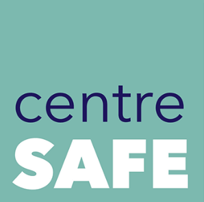
Centre Safe Hotline
Centre Safe empowers survivors through trauma-informed and client-centered services that are equitable, inclusive, diverse, confidential and professional. Their team of certified professionals are always responsive to clients and community needs.
Read More
988 Suicide Prevention
The 988 hotline is available 24/7 to any resident seeking help. It provides support to immediate needs associated with mental health struggles, alcohol/drug addiction, or any other help necessary. It provides free and private communication to anyone seeking a call.
Read MoreCentre County Crisis Line
Crisis Intervention provides mental health intervention, assessment, support, screening, and referral services 24/7. Clients can call, chat, text, or walk in to get help from a Crisis Specialist. They assess the situation, find a hospital or facility close to you, provide a safe space, and will connect you to resources. Crisis Line aims to help support those in danger or in need of assistance.
Read More
Assault & Relationship Violence
Penn State's Sexual Assault and Relationship Violence Hotline is available 24 hours a day, seven days a week, for all Penn State campuses. Since on-campus support services for abuse victims are limited at the campuses, this arrangement will make appropriate referrals to services available in their local communities.
Read More